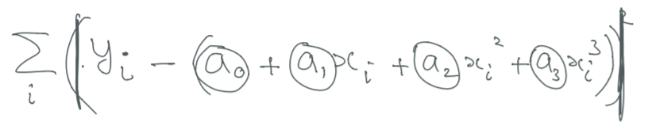

Lecture 1
Root finding/zero finding
The first major topic is root-finding (zero-finding).
To jog your memory a bit, the most common illustration of finding roots is through an equation, as shown below: the square root of 2 is the "root" of the function x2 - 2 = 0. We will not be going too in-depth into Taylor expansion/Taylor series.
Below is a fascinating hand-calculation of the square root of 2 that you should look into when you have time.
Besides brute force, there are three major root-finding methods that people know: the Bisection method, the Newton-Raphson method, and the Secant method.
- Brute force
- Bisection method:
- Newton-Raphson method:
- Secant method:
Try every possibility in order to find the zeroes. We will not focus on this method.
Below is an illustration of the bisection method for the square root of 2, with a tolerance level of 0.0001 (essentially how accurate you want the method to be).
The pros are that the Bisection method guarantees convergence to a root, since the error-bound decreases by a factor of 2 with each iteration. The cons are that it is generally very slow (and thus expensive) due to the "curse of dimensionality" in which the higher the power, the worse the following calculation we need to do. This method also cannot detect multiple roots.
Below is the illustration for the Newton-Raphson method.
The benefit to this method is that it is very fast, since the error decreases very quickly with each iteration. The cost is that there is not necessarily a guarantee of convergence (as long as the function is convex, the function will converge; otherwise, we are not sure). Additionally, the initial starting point is very important and could determine how accurate the method is. Each iteration requires 2 function evaluations (which also could be expensive).
The third method is the Secant method, shown below.
A "shortcut" method is the Secant method. This is good for convex/concave functions, but not necessarily oscillations. This method, aptly named, uses a secant line.
Overview: Curve-fitting
We will later be going over curve-fitting. The essential part and general idea of curve-fitting is finding a curve (in this case, we assume polynomial function) that fits all the datapoints you have on hand.
Loss functions are also important in curve-fitting. Below is an equation of one:
Overview: Optimization
We will also later be going over different types of gradient descent: Vanilla, Minibatch, and Stochastic.
Details will be given later.
Take a look at Professor Hirsa's notes in a pdf: Lecture 1 Notes